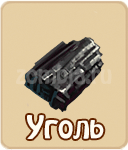

Получено: файл; исходный URL. Получены исходные байты по адресу страницы; идентичность оригинальному домену при замене хоста не подтверждена. Страница: источник.

Уголь
ВКонтакте; данные из ZOMBIA; 05 Мая 2012, 22:25- Тип
- нет данных
- Покупка
- нет данных
- Продажа
- нет данных
- Как получить
- [изображение: Японский сад] Создать в Пруду: 1 =1 +1 (ВКонтакте, ZOMBIA; требует сверки).
- Применение
- нет данных
- Особенности
- нет данных
- Версия и дата
- ВКонтакте; данные из ZOMBIA; 05 Мая 2012, 22:25
Данные по источнику · ВКонтакте, ZOMBIA · 05 Мая 2012, 22:25; дата редакции не установлена
Предварительно: Данные одной исторической фанатской страницы; цифры и подписи изображений требуют сверки. Описание и условия сохранены по колонкам без додумывания.. Требуется сверка.
- Описание материала
- [изображение: Уголь] Стоимость: 4000
- Нужен в строительстве
- нет текстовых данных; возможны неподписанные изображения
- Где достать
- [изображение: Японский сад] Создать в Пруду: 1 =1 +1
- Нужен в создании
- нет текстовых данных; возможны неподписанные изображения
Данные по источнику · браузерная Зомби Ферма / Зомби Мания; платформа требует проверки · дата URL не гарантирует дату редакции
Предварительно: Индивидуальная страница прочитана автоматически, подписи значков могут содержать ошибки; даты редакции и независимость от ЗомбиСити не установлены.. Требуется сверка.
- Основной блок страницы и подписи изображений
- Материал [иллюстрация: Уголь] Уголь Цена покупки: 3 [иллюстрация: Зомбаксы] Цена продажи: 4000 [иллюстрация: Монеты] Продать или купить Уголь можно в Обменке Зомби Фермы Уголь - материал Зомби Фермы, появившийся в игре вместе с японскими декорациями и постройками во время Японской недели - 4 мая 2012 года. Уголь выпадает из ценностей: Подарок строителю [иллюстрация: Подарок строителю] Уголь можно создать в постройке: Уголь [иллюстрация: Уголь] = 1 Мел [иллюстрация: Мел] + 1 Нефть [иллюстрация: Нефть] [иллюстрация: Стрелка] Пруд [иллюстрация: Пруд] Уголь участвует в создании материала: Порох [иллюстрация: Порох] = 1 Уголь [иллюстрация: Уголь] + 1 Кувалда [иллюстрация: Кувалда] [иллюстрация: Стрелка] Японский сад [иллюстрация: Японский сад] Уголь участвует в строительстве: Голубая ракета [иллюстрация: Голубая ракета] Альпийский дом [иллюстрация: Альпийский дом] Летучий корабль [иллюстрация: Летучий корабль] Адмирал [иллюстрация: Адмирал] Вход в Мраморную пещеру [иллюстрация: Вход в Мраморную пещеру] Заброшенная шахта [иллюстрация: Заброшенная шахта] Заброшенная шахта [иллюстрация: Заброшенная шахта] Фемида [иллюстрация: Фемида] Фемида [иллюстрация: Фемида] Подземный ангар зомб. [иллюстрация: Подземный ангар за зомбаксы] Готический склеп [иллюстрация: Готический склеп] Фантом [иллюстрация: Фантом] Фантом 150 [иллюстрация: Фантом 150] Уголь можно выкрутить в рулетке: Карапуз рулетка [иллюстрация: Карапуз] Уголь можно найти при колдовании Палочками: Палочка-выручалочка [иллюстрация: Палочка-выручалочка] [иллюстрация: Стрелка] Бронзовый кубок [иллюстрация: Бронзовый кубок] Серебряный кубок [иллюстрация: Серебряный кубок] Золотой кубок [иллюстрация: Золотой кубок] Бермудский Портал [иллюстрация: Портал] Черный мрамор [иллюстрация: Черный мрамор] Черный мрамор [иллюстрация: Черный мрамор] Черный мрамор [иллюстрация: Черный мрамор] Белый мрамор [иллюстрация: Белый мрамор] Белый мрамор [иллюстрация: Белый мрамор] Белый мрамор [иллюстрация: Белый мрамор] Зеленый мрамор [иллюстрация: Зеленый мрамор] Зеленый мрамор [иллюстрация: Зеленый мрамор] Зеленый мрамор [иллюстрация: Зеленый мрамор] Видео - Как накопать Уголь в Мраморной пещере Палочками-выручалочками:
Связанные сущности
- Пруд — связан со строительством или производством в Пруду — см. стадии и рецепты